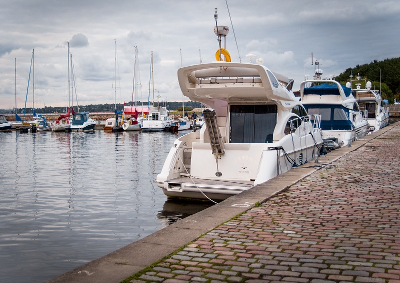
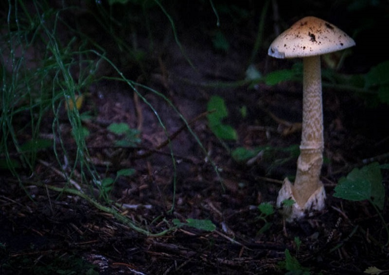

Julia Voronetskaja
- 18. detsember 1985
- Mustamäe tee 149-51, Tallinn 12918
- 55 245 69
- julia.voronetskaja@gmail.com
-
Tartu Ülikool
2008-2011
Eriala: inglise keele õpetaja
Omandatud kraad: magister
-
IT-Kolledge
2013-2015
Eriala: infosüsteemide analüüs
-
Tallinna Tööstushariduskeskus
2017-
Eriala: noorem tarkvaraarendaja
Omandamisel
-
2007- 2011 ROVE Digital OÜ (al. 2009 IT Consulting OÜ)
Amet: peaprojektijuhi assistent
Ettevõtte tegevusala: internetiturundus
-
2011 - 2015 Tallinna Tööstushariduskeskus
Amet: inglise keele õpetaja
Ettevõtte tegevusala: haridus
-
2015 - Tallinna Kesklinna Vene Gümnaasium
Amet: inglise keele õpetaja
Ettevõtte tegevusala: haridus
Isikuomadused
- Suhtlemisoskused: Olen arendanud oma suhtlemisoskust õpetajakoolitusprogrammi käigus. Rakendan neid oskusi oma töös igapäevaselt. Peaprojektijuhi assistendina omandasin oskuse läbi viia äriläbirääkimisi saavutamaks parimaid võimalikke kokkuleppeid.
- Liidrioskused: Peaprojektijuhi assistendina olin täielikult vastutav projektiosade eduka lõpuleviimise ja uute töötajate värbamise ja väljaõppe eest. Julgen teha iseseisvaid otsuseid ning oman kõrget stressitaluvust. Töö kooliõpetajana andis mulle suure kogemuse konfliktide eduka lahendamise vallas.
- Tiimitöö: Töötan efektiivselt tiimis ja suudan jätkata koostööd ka kõige kriitilisemates olukordades. Ma väärtustan koostööd ja austan sügavalt iga meie tiimi liiget ja tema panust.
Professionaalsed oskused
- Keeled: eesti, inglise, vene;
- Programmeerimiskeeled ja objekt-orienteeritud programmeerimine: Java , Python, C#, JavaScript;
- Andmebaasid: MySql, SQL server, Microsoft Access;
- Front-end: HTML5, CSS, JavaScript, JQuery;
- Kujutiste töötlemine: Adobe Photoshop, Adobe Lightroom CC, Gimp
Lisainfo
- Olen kiire õppimisvõimega ning avatud uute teadmiste ja kogemuste omandamisele;
- Hobikorras tegelen fotograafiaga ning naudin seda väga;
- Oman B-kategooria juhiluba;

